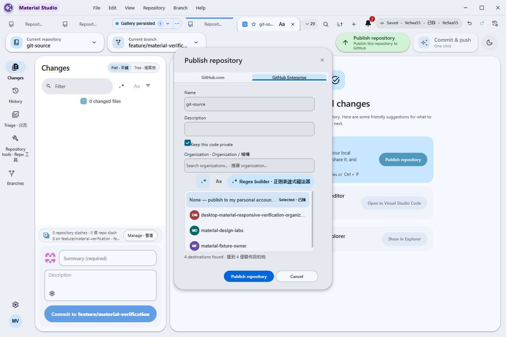

Frame 67 of 101 · windows-publish-organization-cdp
Searchable personal-or-organization owner listbox with bounded filtering, keyboard selection, and physical narrow-window containment
1440 × 960 px · 142,022 bytes · batch windows-publish-organization-cdp
呢一頁只講一張相：邊個 scene 出，邊個 batch 收，尺寸、指令、憑證全部照抄記錄，冇記錄就照直講冇。

What the sources record
- Asset file
- docs/assets/screenshots/material-publish-organization-picker.png
- Pixel dimensions
- 1,440 × 960 px, read from the PNG IHDR header
- File size
- 142,022 bytes on disk
- PNG encoding
- 8-bit truecolour (IHDR colour type 2)
- Gallery output id
- material-publish-organization-picker
- Scene
- publish-organization-picker
- Capture batch
- windows-publish-organization-cdp
- Platform
- windows-headless
- Feature Gallery section
- Repository administration
- Guided workflow caption
- Searchable personal-or-organization owner listbox with bounded filtering, keyboard selection, and physical narrow-window containment
- Publication status
- Published target in the current Windows guided gallery
Alternative text
Bilingual Publish repository dialog with a searchable, contained
organization owner listbox
The alternative text above is the Feature Gallery's own Markdown alt text for this frame, so the image describes itself identically in the wiki and here.
The interaction the harness performs
Add and select the real P0 no-remote git-source repository through the shipped dialog, invoke Push to open Publish Repository, exercise fuzzy, substring, invalid and valid regex, the Regex Builder, keyboard selection of the final owner and None, then prove the bilingual picker at a physical 390x844 auto-fit window before restoring the reviewed 1440x960 frame.
Fixture the capture batch requires
Fresh owned P0 run root with its clean real git-source repository (no remote), provider-backed fixture clone, isolated profile, and three deterministic organization owners including one deliberately long login.
Privacy gate the capture must pass
The scene proves the owned no-remote source before opening Publish Repository, rejects provider mutations, runs the renderer privacy assertion, and requires contained physical 390x844 auto-fit geometry before restoring and capturing at 1440x960.
Regenerating this capture
Run these commands in order, exactly as the capture batch records them. Placeholders in angle brackets are the verifier's own run root, fixture path and CDP port.
-
npx --no-install cross-env RELEASE_CHANNEL=development DESKTOP_SKIP_PACKAGE=1 yarn build:prod -
node .codex/verification/capture_gallery_cdp.js --scenes publish-organization-picker --run-root <owned-p0-run-root> --fixture-path <owned-p0-run-root>\fixture --out <owned-p0-run-root>\captures\gallery --port <owned-cdp-port> --theme dark --language-mode bilingual --width 1440 --height 960
Dated acceptance receipt
2 dated acceptance receipts name this exact PNG:
{kind=link}